@Endpoint @Transactional public class ResourceManagementServiceEndpoint extends Object implements com.saic.uicds.core.infrastructure.util.ServiceNamespaces
BroadcastServiceEndpointBroadcastServiceEndpoint
An example of the interaction of two UICDS clients, in this example two CAD systems, with an
UICDS core to support EDXL-RM messaging can be seen in the following sequence diagram.
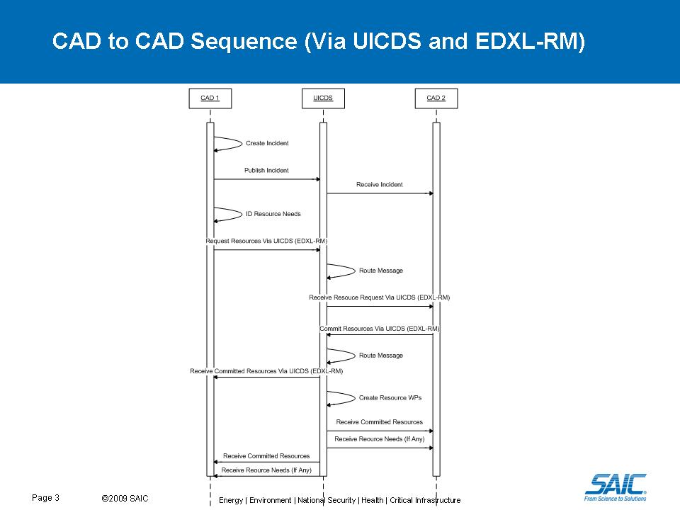
The main points about working with the EDXL-RM schemas when interacting with UICDS are:
Since UICDS only parses the Request and Commit Resource messages it only places requirements on
those messages. The following diagrams show details of data requirements for these two messages.
The full details of what data is required beyond that required for UICDS needs to be negotiated
between the systems that are exchanging EDXL-RM messages.
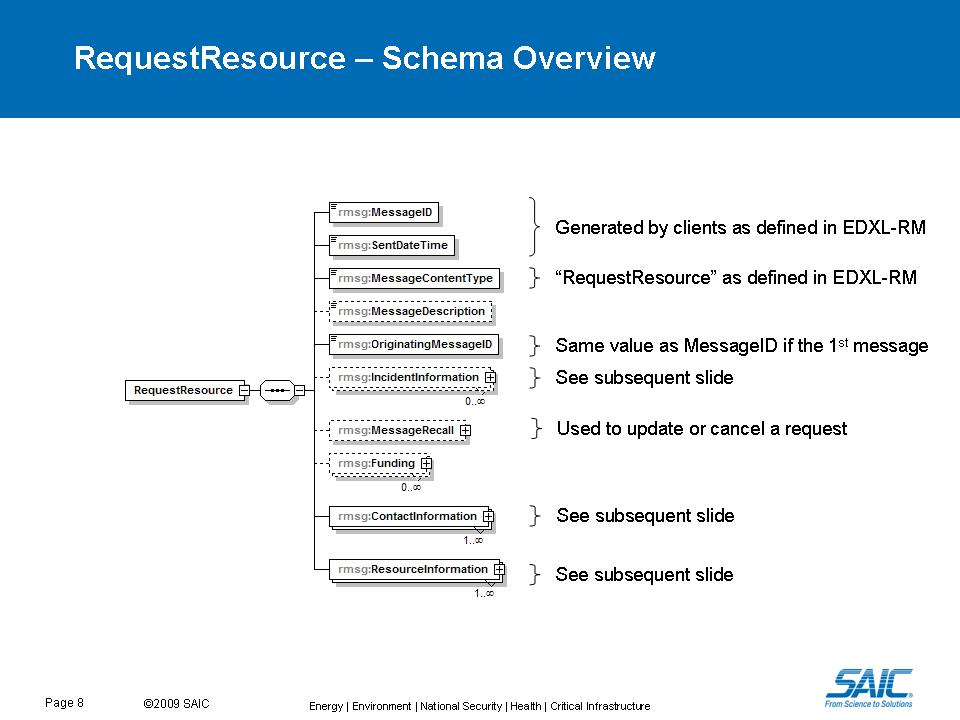
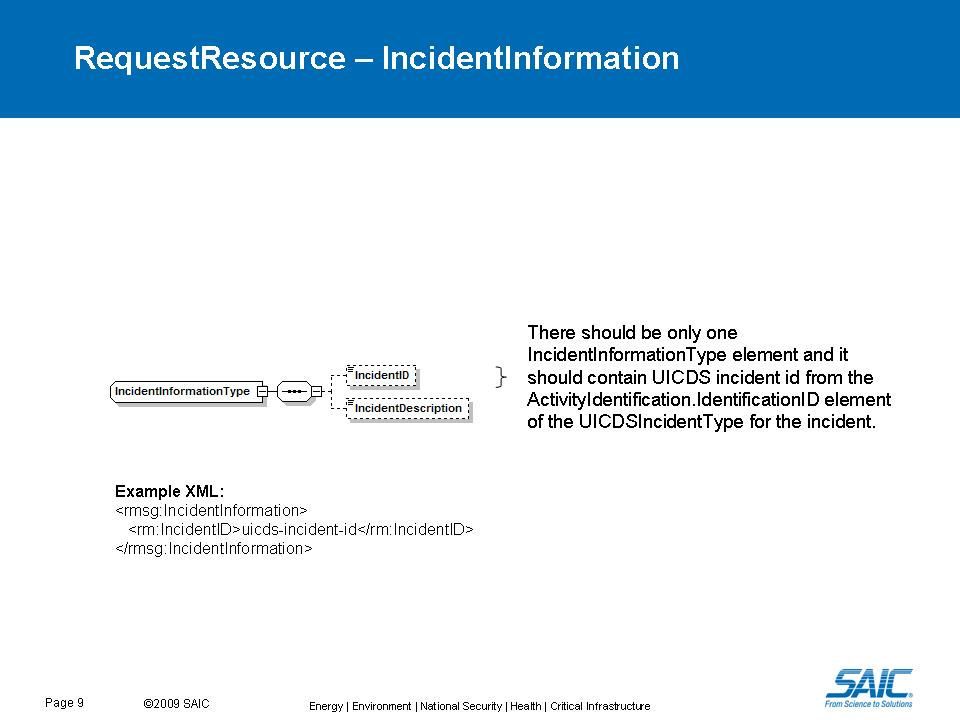
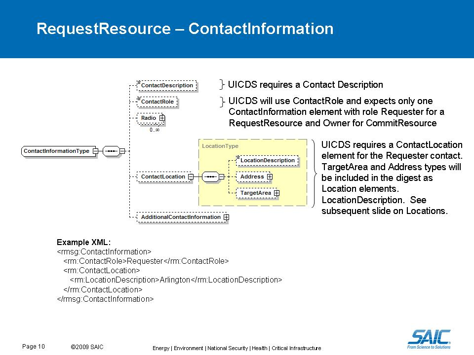
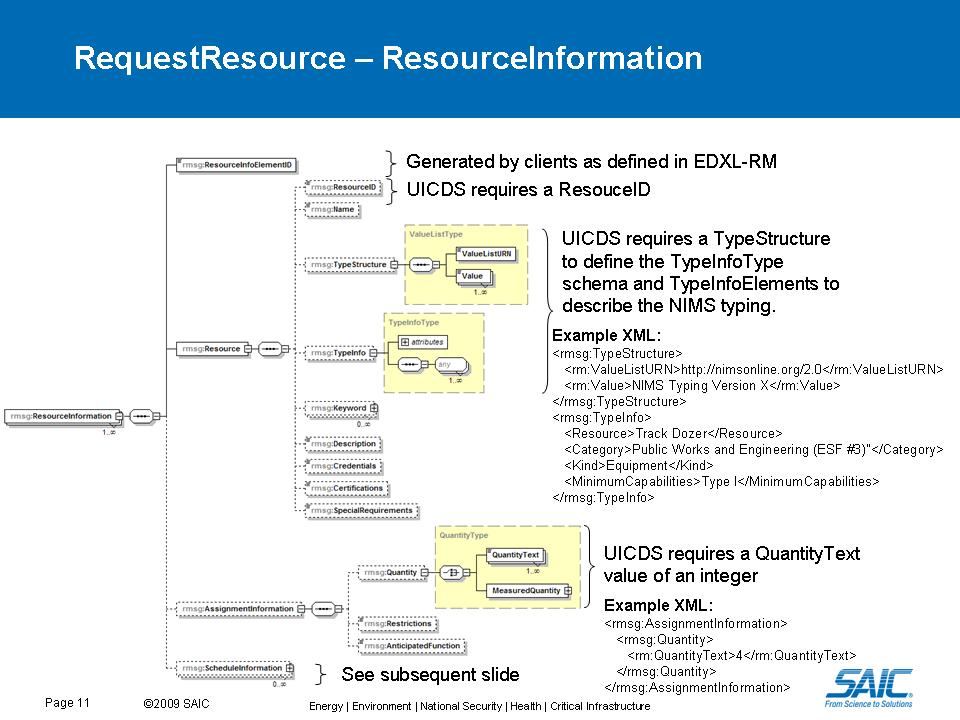
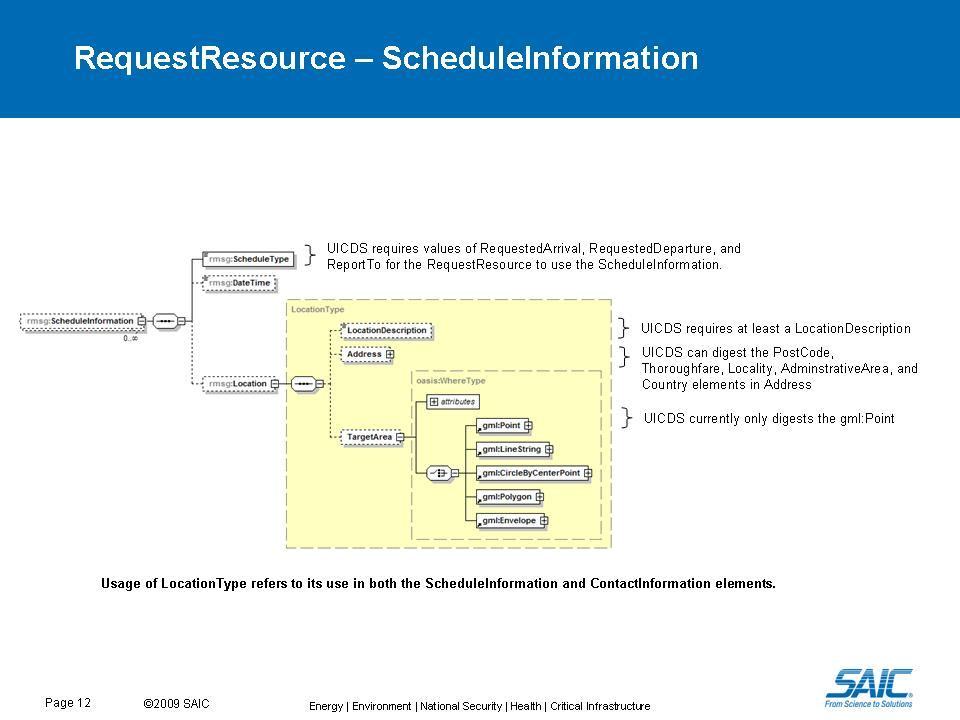
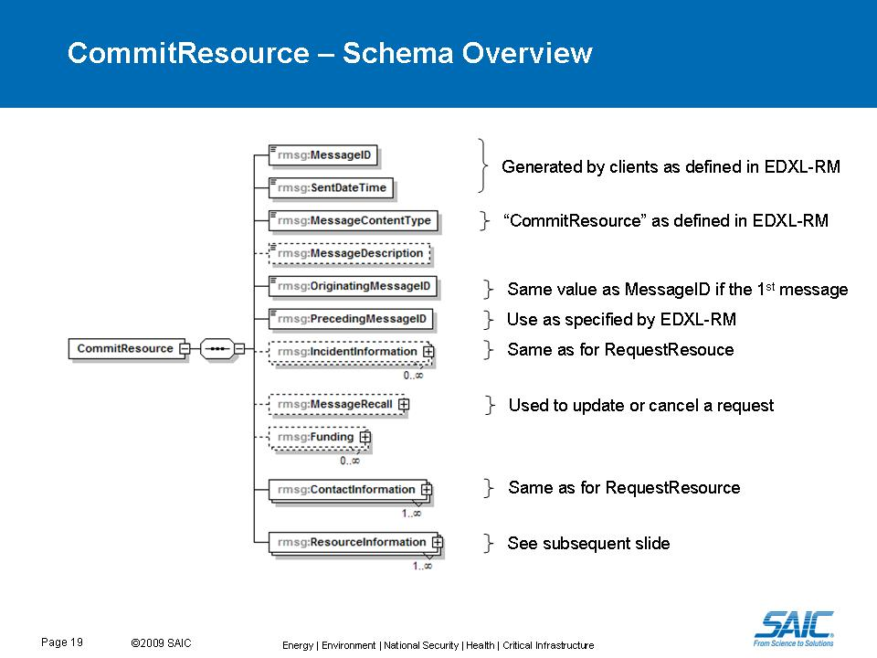
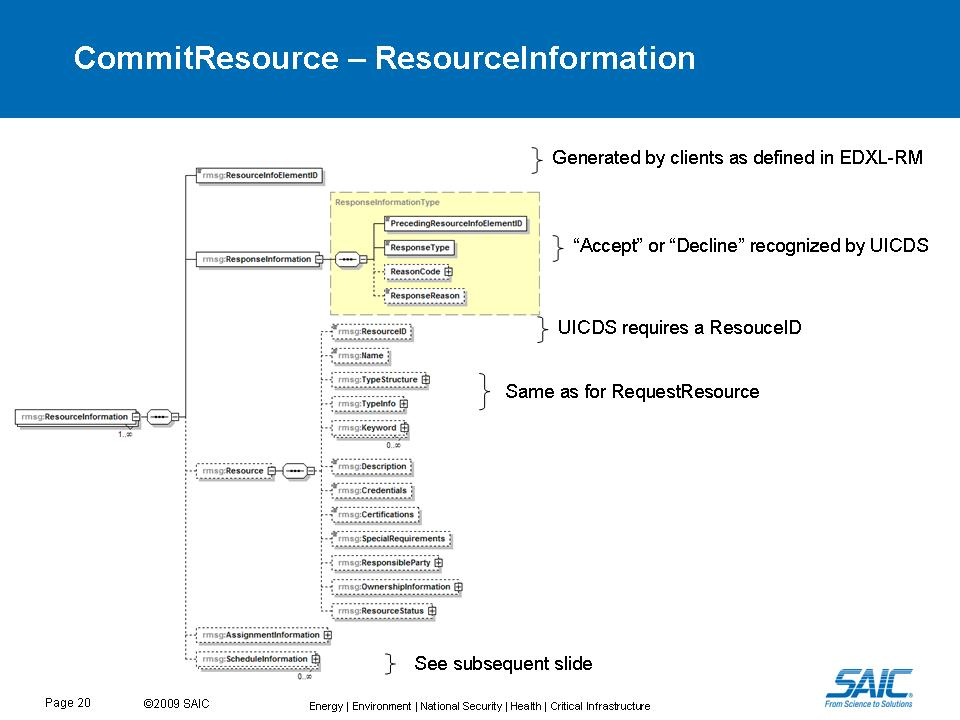
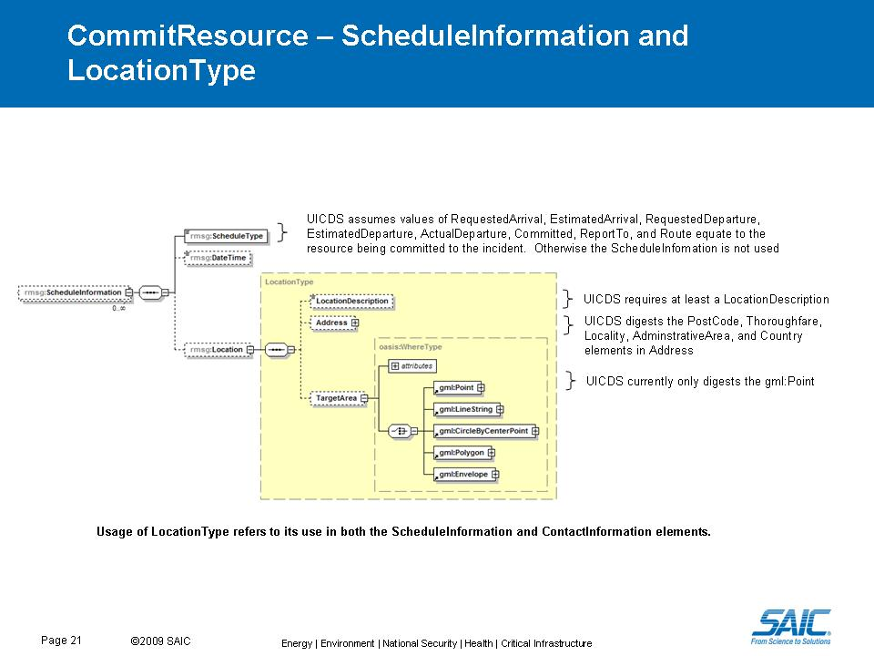
The Request and Commit Resource message are used within UICDS to create a work product and digest so that these data can be searched and provided as outputs. The following diagrams show the digests that are created for the Request and Commit Resource messages within UICDS.
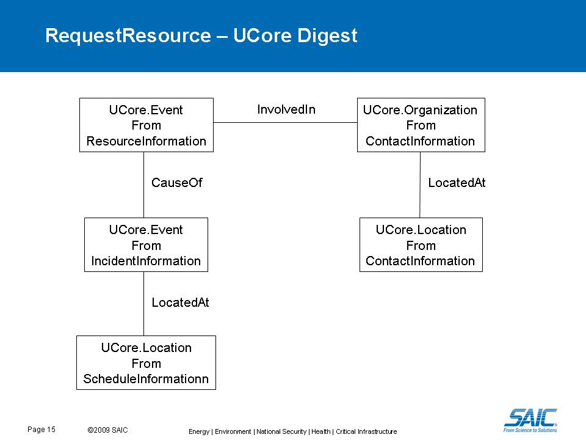
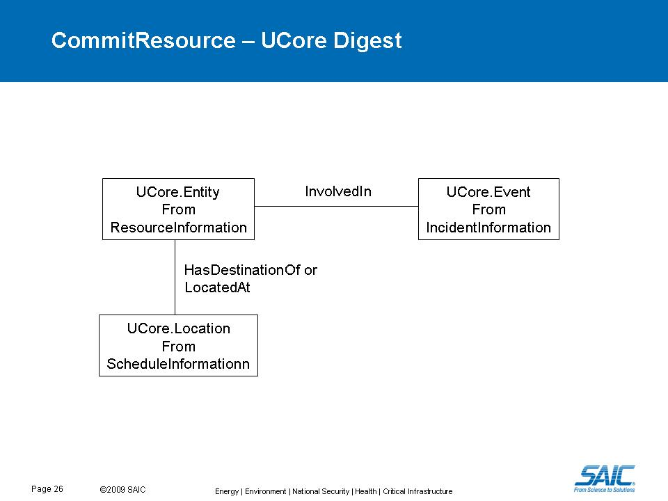
As stated in the EDXL-RM specification an EDXL-RM message posted to UICDS must be encapsulated in an EDXL-DE message. Currently UICDS only routes EDXL-DE messages based on values in the explicit address element. The values in this element must have a type of uicds:user with a value of a resource instance identifier. An example explicit address for RMApplication@core1 to send an EDXL-RM message to RMApplication@core2 would be:
<di:explicitAddress> <de:explicitAddressScheme>uicds:user</de:explicitAddressScheme> <de:explicitAddressValue>RMApplication2@core2</de:explicitAddressValue> </de:explicitAddress>Note that the explicitAddressSchema should be set to "uicds:user" and the explicitAddressValue set to the resource instance identifier that is listed in the agreements and is also the actual identifier that RMApplication2 is using to get notification messages from UICDS.
<di:explicitAddress> <de:explicitAddressScheme>xmpp</de:explicitAddressScheme> <de:explicitAddressValue>user@xmpp.domain.com</de:explicitAddressValue> </de:explicitAddress>The EDXL-DE message will be delivered to XMPP clients as and XMPP message. The body will be a short summary of the sender id and date/time sent from the EDXL-DE header information. If each ContentObject element contains a ContentDescription element then that text will be included also. The full EDXL-DE message will be a sub-element of the XMPP message element. Note that the explicitAddressSchema should be set to "xmpp" and the explicitAddressValue set to the Jabber identifier (JID) of the XMPP user.
BroadcastServiceEndpoint,
com.saic.uicds.core.em.endpoint.NotificationServiceEndpoint,
com.saic.uicds.core.em.endpoint.ResourceInstanceServiceEndpointNS_AgreementService, NS_AlertService, NS_BroadcastService, NS_DirectoryService, NS_IAPService, NS_Incident, NS_IncidentCommandStructureService, NS_IncidentManagementService, NS_InterestGroupService, NS_LEITSCService, NS_LoggingService, NS_MapService, NS_NotificationService, NS_OasisCAP, NS_ProfileService, NS_ResourceInstanceService, NS_ResourceManagementService, NS_ResourceProfileService, NS_SensorService, NS_TaskingService, NS_WorkProductService| Constructor and Description |
|---|
ResourceManagementServiceEndpoint() |
| Modifier and Type | Method and Description |
|---|---|
org.uicds.resourceManagementService.EdxlDeResponseDocument |
edxldeRequest(org.uicds.resourceManagementService.EdxlDeRequestDocument requestDoc)
Allows the client to submit an EDXL-RM document wrapped in EDXL-DE for delivery to explicit
addresses or as information only if it is a CommitResource or RequestResource.
|
org.uicds.resourceManagementService.GetCommittedResourcesResponseDocument |
getCommittedResources(org.uicds.resourceManagementService.GetCommittedResourcesRequestDocument requestDoc)
Gets a list of CommitResource work product digests.
|
org.uicds.resourceManagementService.GetRequestedResourcesResponseDocument |
getRequestedResources(org.uicds.resourceManagementService.GetRequestedResourcesRequestDocument requestDoc)
Gets a list of RequestResource work product digests.
|
@PayloadRoot(namespace="http://uicds.org/ResourceManagementService",
localPart="EdxlDeRequest")
public org.uicds.resourceManagementService.EdxlDeResponseDocument edxldeRequest(org.uicds.resourceManagementService.EdxlDeRequestDocument requestDoc)
EdxlDeRequestDocument - @PayloadRoot(namespace="http://uicds.org/ResourceManagementService",
localPart="GetRequestedResourcesRequest")
public org.uicds.resourceManagementService.GetRequestedResourcesResponseDocument getRequestedResources(org.uicds.resourceManagementService.GetRequestedResourcesRequestDocument requestDoc)
GetRequestedResourcesRequestDocument - @PayloadRoot(namespace="http://uicds.org/ResourceManagementService",
localPart="GetCommittedResourcesRequest")
public org.uicds.resourceManagementService.GetCommittedResourcesResponseDocument getCommittedResources(org.uicds.resourceManagementService.GetCommittedResourcesRequestDocument requestDoc)
GetCommittedResourcesRequestDocument - Copyright © 2012. All Rights Reserved.